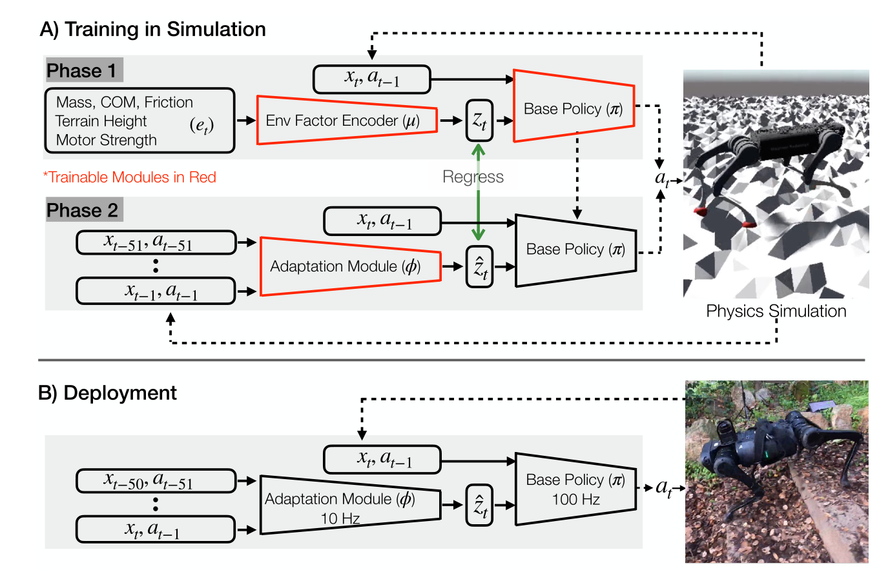

- 论文：RMA:Rapid Motor Adaptation for Legged Robots
- 论文阅读时长：3h
- 笔记整理时长：1h
论文主要针对强化学习从Simulator向现实迁移时，可能产生的问题提出了一种解决方案。
RMA：Rapid Motor Adaptation。机器狗在走路时对环境变化的快速适应（防摔）
- 模拟器与现实的差异性
- 现实机器人模型与模拟器中模型的差异
- 现实地形建模与模拟器中模型的差异
- 物理模拟器无法准确捕捉真实世界的各类参数（比如可触形变等）
- 迁移后fine-tuning的困难
- RMA本身是一个短暂的过程，很难进行多次实验以确定不同action背后的cumulated reward
- 现实设备的昂贵性，不能承受频繁的失败
RMA要求模型能有低于秒级的灵敏度，以及一旦部署在机器上就能直接适应的模型（不做微调），模型结构如下：
- $e_t$ ：模拟器环境的各类超参，如湿度、凹凸性、弹性形变等物理量
- $x_t$ ：$t$ 时刻的 state
- $z_t$ ：环境的特征向量，由Encoder $\mu$ 给出

训练过程：
- phase1：直接用模拟器生成 $z$， 作为policy网络的输入
- phase2：使用$s$、$a$、$z$的历史数据去训练适应模型 $\phi$
- deployment：使用 $\phi$ 和 policy network直接跑
The key insight is that when we command a certain movement of the robot joints, the actual movement differs from that in a way that depends on the extrinsics.
最关键的一个观察是，当机器人关节进行某个运动时，实际位置的变化不仅取决于指令，还与环境有关。可以依赖此特点去反推环境。